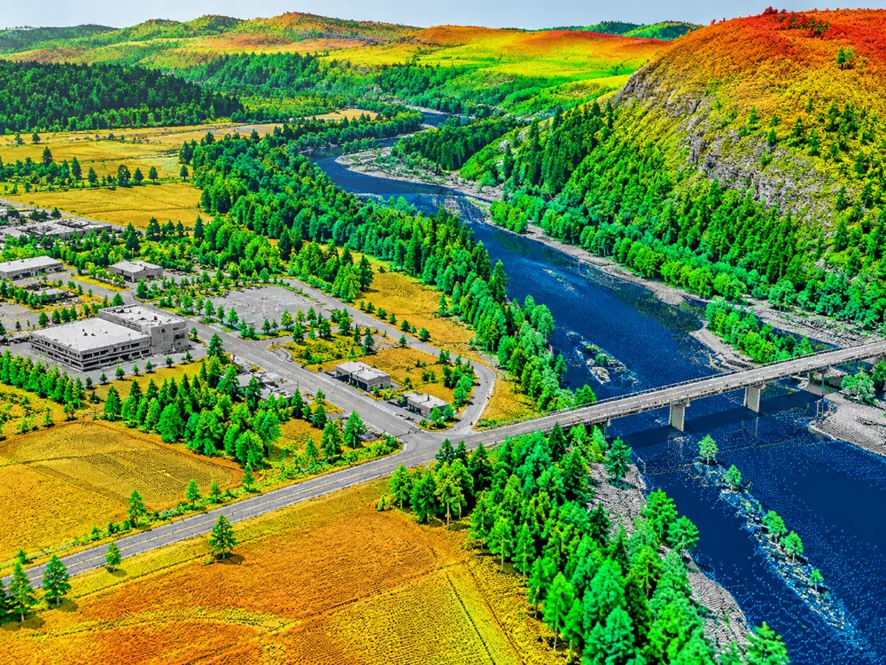

Point Cloud01
LiDAR Processing
High-volume point cloud processing and classification for terrain, corridor and asset mapping programs.
- Strip adjustment & calibration
- Ground, building & vegetation classification
- Powerline, hydro & artifact classification
- DTM / DSM production